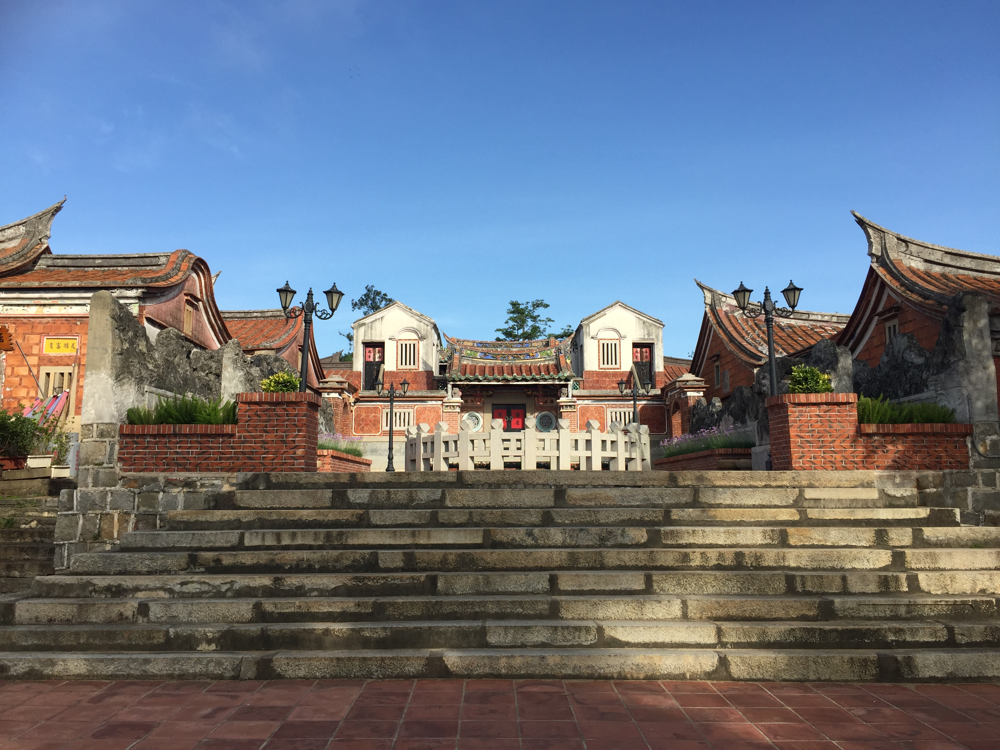
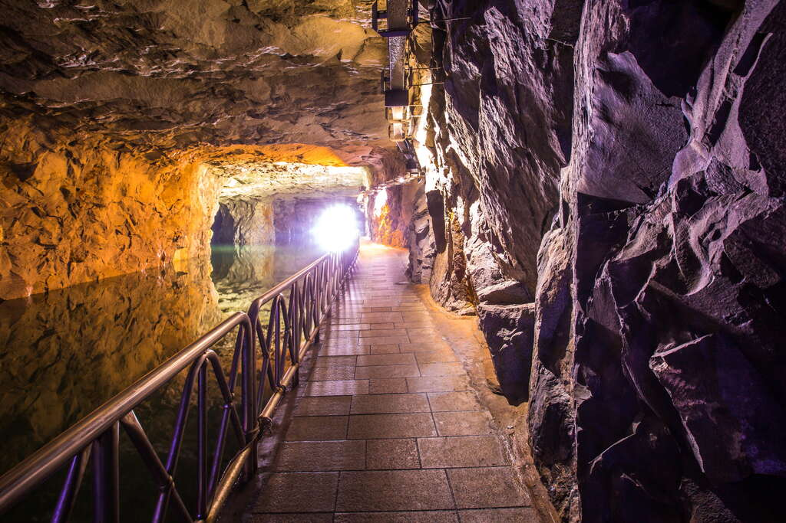
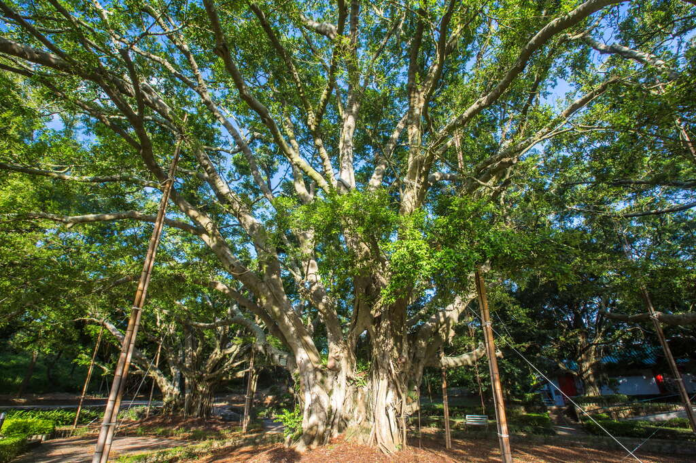
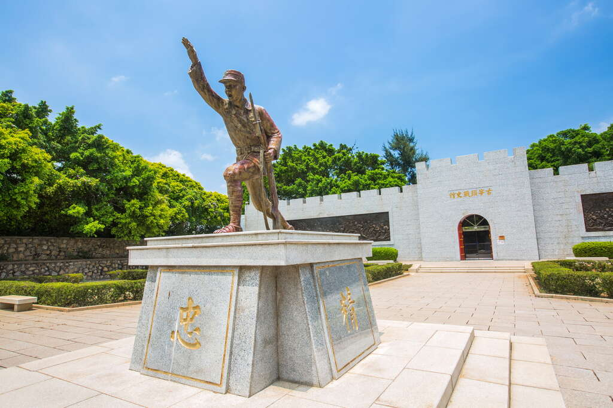

探索金門
歷史悠久的戰地前哨，以金門酒廠和古寧頭戰史館著名，充滿戰地風情。以下是金門著名的景點:

金門國家公園
金門國家公園位於金門縣，為中華民國第六座國家公園，1995年5月25日公告計畫，1995年10月18日成立管理處，是首座位於離島的國家公園，也是首座以維護歷史文化資產、軍事戰役紀念為主軸，並兼具自然資源保育功能的國家公園。

翟山坑道
循階梯而下，走進翟山坑道幽暗的光線裡，鬼斧神工的軍事傑作就在眼前，坑道盡頭接引著深不見底的海水，在炎熱的夏季裡替旅人們帶來一些清涼。翟山坑道內，既長而寬闊的坑道及水道兩區域，是八二三砲戰期間，動員無數人力、耗費五年時間，才辛苦鑿出這條能夠容納42艘水道小艇進出、迴轉的極大的工程，又被譽為「地下金門」傑作之一。隨著海面晃動的倒影前行，不由得對戰時國軍弟兄的努力感到震撼。走出坑道外，陳列著各式登陸小艇以及防空武器，也是曾經的軍事記憶，值得前往駐足留影。

金門榕樹群
百年的古榕樹齊聚在太湖北岸，「榕園」的意象油然而生，園區裡的榕樹們大多從幾十年前便在此紮根，生長超越一甲子的氣根粗壯無比，枝葉在天空中蜿蜒繚繞，形成一片又一片廣大的綠傘，提供人們乘涼的好所在，午後相約在此下棋飲茶，是金門最道地的生活風景。

古寧頭戰史館
古寧頭戰史館係民國73年由金防部司令官宋心濂於任內所建，為紀念決定海峽兩岸對立局面的古寧頭戰役。 金防部移交金門國家公園管理後，於90年重新開館。 館內主要以十二幅大型油畫，介紹古寧頭大戰的經過，並增設放映空間，以「古寧頭大戰」影片，呈現戰爭動態影像。